TEMA 07
Hojas de estilo. CSS
Material de estudio organizado a partir del PDF correspondiente. Se conserva el contenido textual del documento y se distribuye por páginas para facilitar su consulta.
Página 1
Hojas de estilo. CSS
Página 2
1. Introducción y contextualización práctica
4
2. Introducción a CSS
5
2.1. Historia de CSS
5
2.2. CSS y los navegadores
5
3. Características de CSS
6
3.1. Formas de incluir CSS en HTML
6
3.2. Sintaxis de CSS
3.3. Comentarios
4. Selectores
8
4.1. Ejemplo del uso de selectores
9
5. Herencia
10
5.1. Colisiones de los estilos
10
6. Unidades de medida
12
6.1. Unidades de medida absolutas
12
6.2. Unidades de medida relativas
12
6.3. Ejemplo de unidades absolutas y relativas
13
7. Colores
13 cualquier medio o procedimiento, incluidos la reprografía y el tratamiento informático.
Página 3
8. Caso práctico 1: “Test sobre CSS”
14
9. Caso práctico 2: “Aplicar CSS a HTML”
15
10. Resumen y resolución del caso práctico de la unidad
16
11. Webgrafía
17
Página 4
1. Introducción y contextualización práctica
En los temas anteriores, hemos construido el contenido de la página web. Sin embargo, han quedado en un segundo plano temas como la disposición de los elementos, los colores, las fuentes, etc. Ese diseño se realizará con las hojas de estilo y permitirá personalizar un documento web tanto en la pantalla como a la hora de imprimirlo. Las hojas de estilo han supuesto un avance muy importante en el diseño web, ya que ofrecen un rango de posibilidades muy amplio para conseguir mejoras en los documentos HTML. Inicialmente, no se le daba tanta importancia al aspecto. No obstante, desde que la web se democratizó, la presentación ha ganado un papel muy importante en la creación de sitios web. Alberto quiere dotar de más contenido a la intranet de la empresa y, para ello, quiere tener los CV de todos los trabajadores en formato web. Se pone manos a la obra y le pide a Gloria que le ayude con la plantilla. Escucha el siguiente audio donde planteamos la contextualización práctica de este tema. Encontrarás su resolución en el apartado «Resumen y resolución del caso práctico de la unidad». Conocer las características de las hojas de estilo. Aprender su sintaxis. Diferenciar los numerosos selectores. Aprender el concepto de herencia. https://bit.ly/3ioDPB6
Página 5
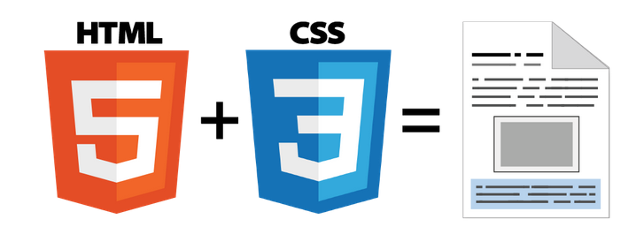
2. Introducción a CSS
CSS representa las siglas de Cascading Style Sheets (hojas de estilo en cascada), que podemos definir como el lenguaje que nos permite controlar el aspecto visual de nuestro documento HTML. HTML y CSS se complementan para separar el contenido y su presentación. Esta división nos aporta numerosas ventajas, puesto que, al ser independientes el contenido y el aspecto visual, para un mismo contenido podremos tener diferentes visualizaciones. Esta característica es fundamental para poder trabajar en distintos dispositivos. En la siguiente web verás un ejemplo de cómo cambia visualmente un mismo contenido cuando se le aplican diferentes hojas de estilo. Te sorprenderán los cambios.
2.1. Historia de CSS
Al igual que HTML, CSS ha evolucionado a lo largo de estos años, por lo que han aparecido diferentes versiones, cada una de las cuales mejoraba la anterior, incluyendo la corrección de errores y mejoras en su funcionalidad. En el organismo oficial W3C puedes consultar la evolución de este lenguaje.
2.2. CSS y los navegadores
Los navegadores interpretan de manera distinta el CSS. Por ello, es muy importante conocer las posibles limitaciones del navegador para conseguir la máxima compatibilidad. Es posible que con ciertos navegadores tengamos que incluir una sintaxis específica para alcanzar la correcta visualización de la página web. En la actualidad, Chrome, Safari, Firefox y Opera son los más completos en lo que se refiere a compatibilidad con CSS, pues soporta completamente la versión 2.1 y muchas características de CSS3. En el siguiente enlace puedes consultar el soporte CSS en los navegadores más populares.
Página 6
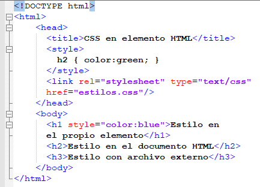
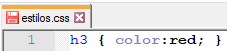
3. Características de CSS
Antes de usar CSS, cuando se quería modificar el aspecto visual de los elementos HTML, se incluían en la propia etiqueta algunos atributos como color, fuente, etc. Hoy en día esta forma de trabajar todavía se permite, pero es una práctica obsoleta, y todo lo relacionado con el aspecto visual debe llevarse a la hoja de estilos.
3.1. Formas de incluir CSS en HTML
Llegados a este punto, necesitamos saber cómo le indicamos al documento HTML qué estilo quiero aplicar y cómo.
Existen tres formas:
• En el propio elemento HTML: se indica el estilo en la propia etiqueta. Este método no es el más adecuado,
pues hay que indicar el estilo etiqueta a etiqueta.
• En el documento HTML: se puede incluir el estilo en la cabecera del documento HTML utilizando la etiqueta
<style>.
• En un fichero externo: este es el método que más se utiliza, porque podemos tener los estilos del documento
separados en un fichero externo. Se indica en la cabecera con la etiqueta <link>, que tiene los siguientes
atributos:
» rel: relación entre HTML y el fichero externo. En este caso indicamos que es una hoja de estilo usando el valor stylesheet. » type: se indica el tipo de recurso. En este caso, el valor debe ser text/css. » href: dirección URL donde se encuentra el fichero externo. Puede estar en local o ser una dirección de Internet. Código 1. Formas de incluir CSS en HTML
Página 7
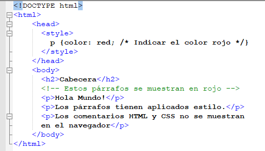
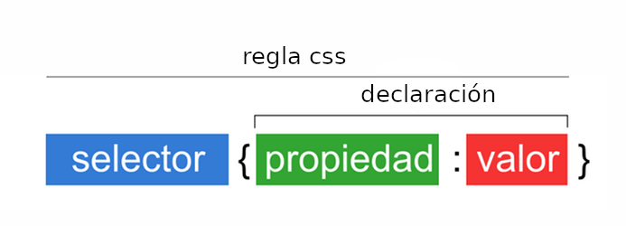
3.2. Sintaxis de CSS
Tal y como sucedía con los documentos HTML, el fichero CSS es un fichero de texto plano en el que se van incluyendo las reglas propias de CSS. El navegador interpreta este fichero y lo aplica al HTML.
La sintaxis sigue el siguiente patrón:
• selector: es el elemento HTML al cual se le va a aplicar el estilo que le indiquemos. Por ejemplo, un párrafo
<p>.
• propiedad: es la característica que se va a cambiar. Por ejemplo, el color.
• valor: Es el valor que se le asigna a la propiedad. Por ejemplo, el color rojo.
El fichero CSS puede contener cientos de reglas CSS aplicadas a diferentes elementos HTML. Cuando queramos aplicar más de un estilo a un elemento, debemos separarlos con punto y coma. Actualmente CSS 2.1 dispone de 115 propiedades, mientras que CSS 3 ya ha llegado a las 239 propiedades.
3.3. Comentarios
En CSS también se pueden incluir comentarios, lo cual es altamente recomendable, porque a medida que se van creando reglas, el fichero se aumenta de tamaño y es complicado seguir el flujo de reglas que debemos aplicar. Los comentarios se indican con los caracteres /* para iniciar el comentario y */ para finalizarlo. El navegador ignorará todo lo que se encuentre entre esos caracteres, pero nos servirá para incluir información que contribuirá a una mejor interpretación de cómo se aplican las reglas CSS. Código 2. Comentarios en CSS Audio 1. “CSS legible” https://bit.ly/2Ama1Uo
Página 8
4. Selectores
Gracias a los selectores, podremos escoger a qué elemento o grupo de elementos HTML le vamos a aplicar la declaración de la regla CSS.
Los selectores se pueden clasificar en los siguientes tipos:
• Selector universal: Se seleccionan todos los elementos HTML de la página. Se indica por medio de un *.
• Selector etiqueta: Se seleccionan todos los elementos HTML que coinciden con la etiqueta indicada en el
selector.
• Selector de clase: En CSS se pueden crear clases para agrupar elementos a los que interese aplicar un cierto
estilo. En el elemento HTML se utiliza el atributo class para indicar la clase que se le desea asociar. En las reglas CSS se debe anteponer un punto (.) al nombre de la clase creada.
• Selector de identificador: Se utiliza cuando queremos aplicar un estilo a un solo elemento HTML. A diferencia
de las clases, que se pueden utilizar con varios elementos, el identificador debe ser único. En este caso, hay que indicar en el elemento HTML el atributo id para asociarle el identificador, y en las reglas CSS se le debe anteponer la almohadilla (#) al nombre del identificador.
• Selector descendente: Se seleccionan elementos incluidos en otros elementos. Los elementos se indican
separados por un espacio en blanco.
• Agrupación de selectores: Nos permite indicar un estilo a la lista de selectores indicados. En este caso los
selectores se separan por comas (,).
• Selector de hijos: Es muy parecido al selector descendiente, pero difiere en un matiz. En este caso, se
selecciona el elemento que es hijo directo de la etiqueta padre. Se indica con el signo “mayor que” (>).
• Selector adyacente: Se utiliza cuando queremos seleccionar elementos que son hermanos. Es decir, un
elemento que se encuentra justo al lado de otro elemento. Se indica con el signo más (+).
• Selector de atributos: Permite seleccionar elementos HTML en función de los atributos que tenga asignados.
Existen varios tipos:
» [nombre_atributo]: Selecciona los elementos HTML que tienen ese atributo independiente de su valor. » [nombre_atributo=valor]: Selecciona los elementos HTML que tienen ese atributo con ese valor. Vídeo 1. “Uso de selectores” https://bit.ly/2Bt2Qdy
Página 9
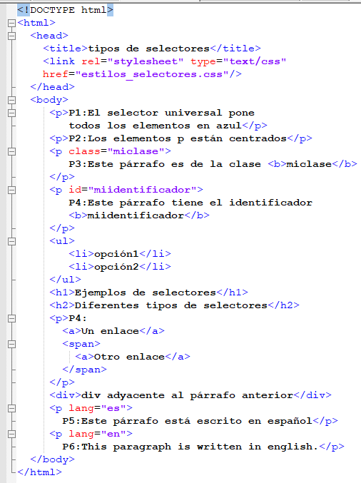
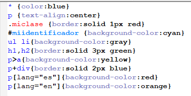
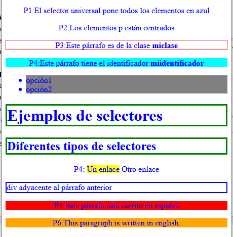
4.1. Ejemplo del uso de selectores
En el código 4 se muestra el fichero CSS externo utilizado, aplicado al código 3. La figura 5 presenta la visualización en navegador.
4.1.1. Explicación del ejemplo selectores
Exponemos el significado de los selectores utilizados en código 3-4:
• {color:blue}: todos los elementos tendrán el color azul.
• p {text-align:center}: todos los elementos que sean párrafos están alineados al centro.
• .miclase {border:solid 1px red}: se ha creado una clase llamada miclase y se ha aplicado al párrafo 3. El estilo
creado consiste en aplicar un borde rojo de 1px.
• #miidentificador {background-color:cyan}: se ha creado el identificador miidentificador para aplicarlo
solamente al párrafo 4. Se le aplica el color de fondo cyan.
• ul li{background-color:gray}: selector para indicar que a todos los descendientes de <ul> que sean <li> se les
aplique un fondo gris. Código 3. Ejemplo uso de selectores. Código 4. Fichero externo CSS ( estilos_selectores.css).
Página 10
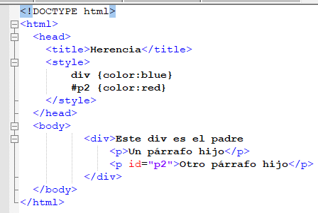
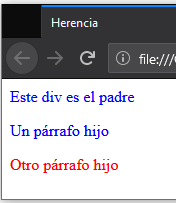
• h1,h2{border:solid 3px green}: agrupación de selectores para indicar que a los <h1> y a los <h2> se les
aplique un borde verde.
• p>a{background-color:yellow}: selector hijo donde se indica que solo los enlaces que sean hijos directos de
<p> deben tener el fondo amarillo. Como se observa, el primer enlace sí es hijo directo, pero el segundo no, porque entre ambos está la etiqueta <span>.
• p+div{border:solid 2px blue}: selectores adyacentes. Al ser un elemento <div>, hermano de un elemento
<p>, se aplica borde azul.
• p[lang=”es”]{background-color:red}: cuando el párrafo tenga el valor de lang en español, se tiene que poner
el fondo rojo.
• p[lang=”en”]{background-color:orange}: se aplica naranja cuando el lenguaje sea inglés.
5. Herencia
Uno de los aspectos que debemos considerar en CSS es que los estilos se heredan. Esto implica que, si un elemento HTML se encuentra dentro de otro, este último hereda todos los estilos que se hayan podido definir para la etiqueta padre. Por eso a las hojas de estilo se les suele llamar «hojas de estilos en cascada». Si para la etiqueta hija se define un estilo que modifica la del padre, siempre se tomará el estilo de la etiqueta hija. Por herencia, los dos párrafos deberían tener el color azul, puesto que heredan el estilo del <div>. Sin embargo, al segundo párrafo le indicamos otro estilo y por eso se muestra en rojo.
5.1. Colisiones de los estilos
Si tenemos muchas reglas CSS en un fichero de estilos, puede suceder que, sin querer, se intenten aplicar estilos diferentes a un mismo elemento HTML. En este caso, el mecanismo para determinar el estilo que se debe aplicar suele ser complejo y depende del navegador, hoja de estilo, importancia de la regla, etc. Vídeo 2. “Herencia” https://bit.ly/31BDRPT Código 5. Herencia y su visualización en el navegador
Página 11
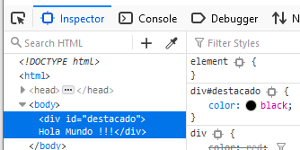
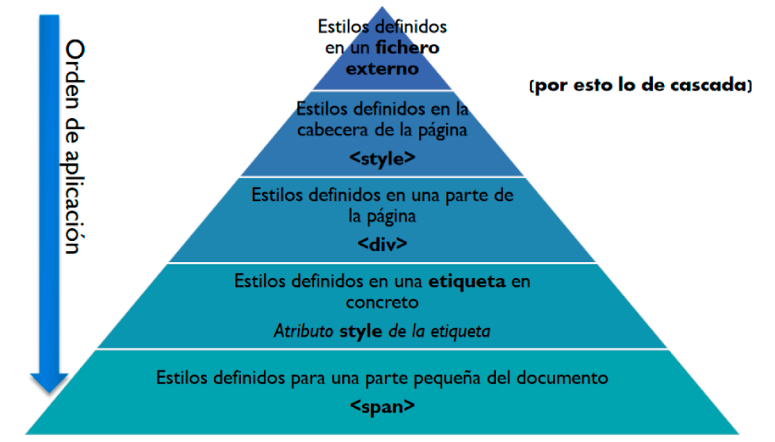
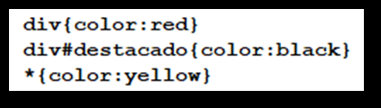
Como norma general, se aplica lo siguiente:
• Cuanto más concreto sea un selector, mayor importancia tendrá y, por lo tanto, es el que se aplicará.
• Si la importancia es la misma, se aplicará la última regla creada.
Por ejemplo, si tenemos las siguientes reglas:
El texto incluido en div se mostraría de color negro, puesto que es el más concreto. El selector universal (*) siempre es el menos concreto y, por lo tanto, sería el último en aplicarse en caso de conflicto. Si activamos el inspector de la página en un navegador como Mozilla, que se activa con F12, podremos ver lo que se
muestra en la siguiente figura:
Al colocarnos sobre <div> podemos observar que en la parte derecha aparecen los estilos que se le aplican. El navegador es el que decide y tacha el resto, tal y como se muestra en el ejemplo. Código 6. Colisiones de estilos.
Página 12
6. Unidades de medida
Muchas de las propiedades que podemos aplicar a los elementos seleccionados en las reglas CSS se basan en medidas. Por ejemplo, estas se pueden usar para indicar la altura de un elemento, el tamaño de la letra o la anchura de un <div>. Por este motivo, es muy importante conocer qué tipo de medidas existen, así como sus características. Las unidades de medida se pueden dividir en absolutas y relativas.
6.1. Unidades de medida absolutas
Cuando se trabaja con unidades absolutas, su valor se define de manera completa y no depende de otras referencias.
Las unidades absolutas más importantes se muestran en la siguiente tabla:
6.2. Unidades de medida relativas
Este tipo de unidades dependen de otro valor de referencia. Las unidades relativas más utilizadas son:
Sigla Significado Equivalencia in Significado Una pulgada equivale a 2.54 cm. cm centímetros 1 cm equivale a 10 mm. mm milímetros px pixeles 1 px equivale a 1in/96. Por lo tanto equivale a 0,26 mm. pt puntos 1 punto equivale a 1in/72. Por lo tanto equivale a 0,35 mm. pc picas 1 pica equivale a 12 puntos. Por lo tanto equivale a 4,23 milímetros. Tabla 1. Unidades absolutas. Siglas Significado em Se relaciona con el tamaño de la fuente del contenedor padre al que pertenece. rem Se relaciona con el tamaño de la fuente raíz que suele ser 16px si no se indica lo contrario. % Relativo al elemento padre. vw 1% del ancho de la ventana. vh 1% del alto de la ventana. Tabla 2. Unidades relativas.
Página 13
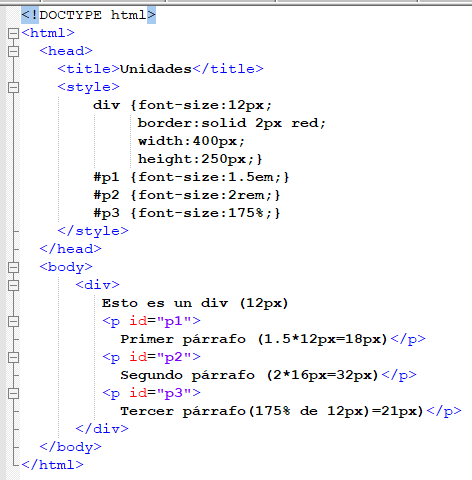
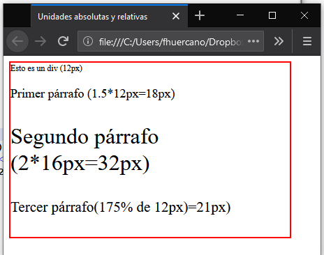
Debemos tener cuidado con el uso de la unidad relativa em, porque al estar relacionado con el contenedor, si tenemos varios contenedores anidados y utilizamos esta unidad en todos, el aumento o disminución del tamaño estaría encadenado. Cuando se trabaja con móviles, se usan las medidas vw y vh para adaptar el contenido al ancho y alto de la pantalla del móvil. Las unidades que más utilizaremos serán px, rem y %.
6.3. Ejemplo de unidades absolutas y relativas
A continuación, se muestra un ejemplo de código con el uso de unidades absolutas y relativas para el tamaño de la
fuente:
Se le ha aplicado <div>, un borde rojo y un tamaño de fuente de 12px. También se le ha indicado un ancho y un alto con valores absolutos en px. En cambio, para los párrafos incluidos en el propio <div> (para ellos, su contenedor
padre) se han indicado los siguientes valores:
• Párrafo 1: tamaño de fuente relativo a su padre, porque se usa em.
• Párrafo 2: tamaño de fuente relativo a la fuente raíz, porque se usa rem. 16px es el tamaño por defecto.
• Párrafo 3: tamaño de fuente relativo a la fuente de <div>. Un 175% de 12px que es el tamaño de fuente de
<div>.
7. Colores
Una de las primeras cosas que pensamos cuando queremos darle estilo a una página web es cambiarle el color. Para
indicar el color que queremos aplicar a un elemento HTML se puede usar:
• Su nombre: existen una serie de nombres predefinidos asociados con los colores. Por ejemplo, red, green,
blue… Existe un total de 140 nombres de colores. Código 7. Código HTML con unidades absolutas y relativas.
Página 14
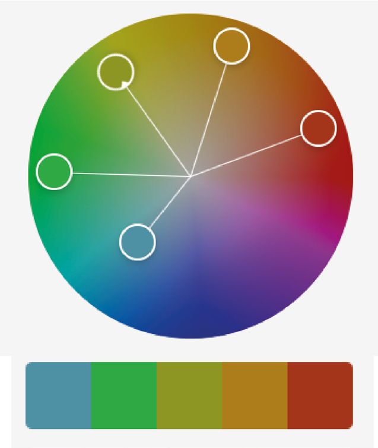
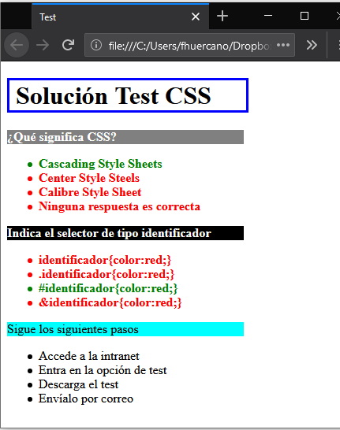
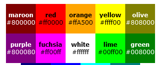
• El valor RGB: estas siglas corresponden a los colores primarios que son el rojo (red), el verde (green) y el
azul(blue). El color secundario se obtiene de la mezcla de estos colores primarios. Cada color primario puede tener una intensidad entre 0 y 255. De esta manera, si tenemos el valor RGB (0,0,0), obtendríamos el negro; con el (255,255,255), el blanco; y con el (255,0,0), el rojo puro.
• El valor hexadecimal: es la representación en hexadecimal de la
codificación en RGB. De esta manera, el valor FF corresponde con el 255 y el 00 con el 00 de RGB. Por lo tanto, el color rojo en formato hexadecimal seria #FF0000. Una tabla completa de los colores que se pueden utilizar indicando su nombre, valor RGB, y valor hexadecimal lo puedes ver aquí. Existe una herramienta muy útil que nos permite elegir los colores más adecuados para nuestra página web. Esta herramienta es Adobe Color CC y facilita el estudio de los colores análogos, complementarios, compuestos, o tonos similares. Hay que tener en cuenta que debe haber un equilibrio entre los colores elegidos en el sitio web para conseguir que visualmente sea atractivo.
8. Caso práctico 1: “Test sobre CSS”
Planteamiento: Alberto habla con Gloria y le comenta que quiere incluir en la intranet el resultado de un test que se hizo en un examen interno para ascender de programador senior a junior. Nudo: la idea que tiene Alberto es que aparezcan las preguntas con un determinado formato, la respuesta correcta en verde, y el resto de respuestas en rojo. Para ello, le pide que use clases, identificadores y selectores de CSS. Alberto necesita, también, que la primera pregunta tenga un formato diferente. Al final del test deben aparecer unas instrucciones indicando cómo se puede descargar el test. La cabecera de este listado de instrucciones debe ser diferente a las anteriores. Importante: las respuestas deben aparecer en negrita, pero no la lista de instrucciones. Para poner el texto en negrita debemos usar la propiedad font-weight:bold; ¿Cómo desarrollarías la solución a este planteamiento?
Desenlace:
El código HTML-CSS completo está en el anexo del tema. solución propuesta.
Página 15
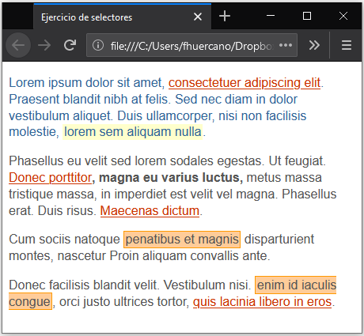
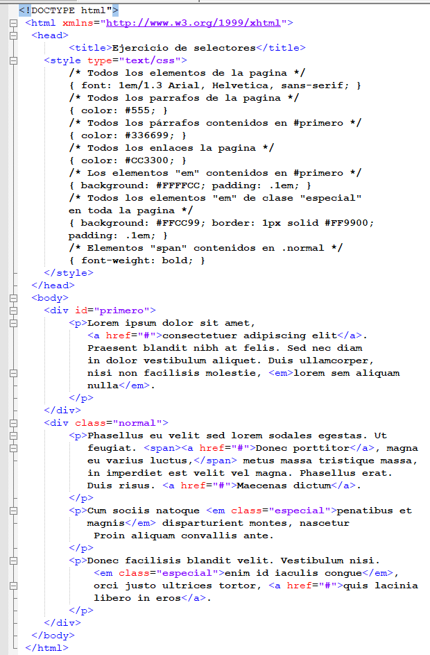
9. Caso práctico 2: “Aplicar CSS a HTML”
Planteamiento: Gloria tiene que aplicar formato CSS a un documento HTML que le ha pasado Alberto. Nudo: Alberto ha comenzado a crear un documento HTML y necesita aplicarle estilos, pero no lo podrá terminar porque tiene que seguir con otro proyecto y le pide a Gloria que lo termine ella. En el propio código HTML Alberto ha indicado a qué elementos les quiere aplicar los estilos. El código HTML sería el mostrado en el código 8 y el aspecto final que Alberto tenía hecho en un borrador es el que se muestra en la figura 11. ¿Cómo lo desarrollarías? Desenlace: El código completo está en el anexo del tema.
10. Resumen y resolución del caso práctico de la
unidad En este tema hemos realizado una introducción a la hoja de estilos CSS indicando sus características y su sintaxis. Es muy importante conocer el uso de los selectores, porque permiten acceder de manera muy concreta a los elementos HTML a los que queremos aplicarles estilos. Gracias a la herencia no es necesario reescribir reglas que se aplican al contenedor padre, pero hay que tener cuidado con los conflictos entre estilos. Las unidades de medida nos permiten controlar el tamaño y disposición en el diseño web, y los colores el aspecto visual. Código 8. Código HTML con comentarios CSS.
Página 16
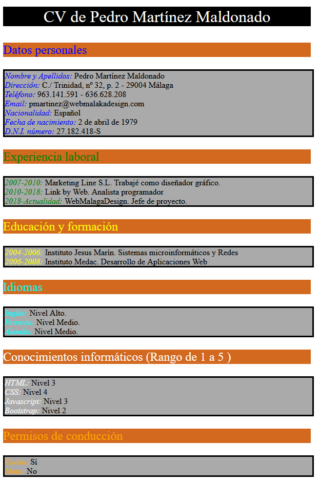
Resolución del caso práctico de la unidad Desenlace: El código completo está en el anexo del tema.
11. Webgrafía
CSS Minifer: herramientas de minificación. Open Source Web Design: sitio web que ofrece cientos de plantillas gratuitas con posibilidad de utilizarlas libremente en aplicaciones personales y comerciales. CSS Zen Garden: es una galería distinta a las tradicionales, pero se ha convertido en un referente en lo que se refiere a diseños complejos realizados mediante CSS. Tutorial de CSS: escuela online de CSS.